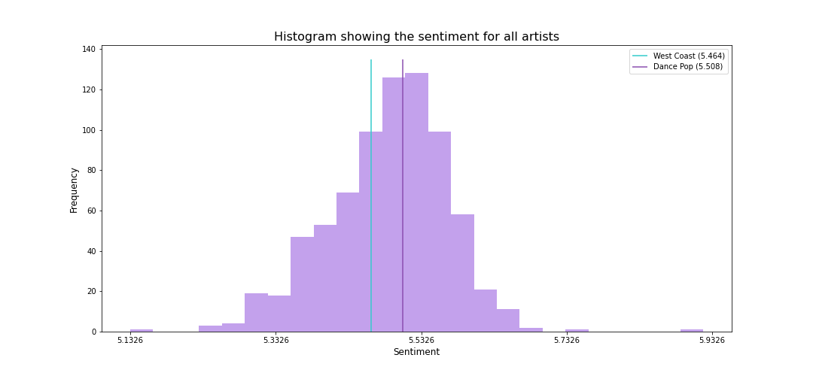

Analyzing Music Genres
Using Network Theory
and Natural Language Processing


Data science and music? Hear us out.
Have you ever wondered how the artists of two different music genres might be connected? If so, you've come to the right place. This webpage provides an exploration of the Wikipedia pages of artists from the two genres "West Coast Hip Hop" and "Dance Pop", using links between the pages to create a network connecting all artists. This network contains several communities, which are further explored. The Wikipedia pages provide a large amount of text, allowing for text and sentiment analysis of artists as well as communites. By including lyrics from some of the songs associated with the artists, it is also possible to explore sentiments of lyrics and investigate how these sentiments change over time.
The choice of genres
was not trivial.
So how do you choose which two genres to explore? We aimed to select two genres that were somewhat connected, but simultaneously distinct enough to form clusters. Ultimately, it came down to selecting two genres that both contain artists that have (or have had) a noteworthy presence in the music business. That could be artists such as Beyoncé, Snoop Dogg and Madonna. Artists such as these will most likely be referenced by both artists from the same genre, and artists from the opposite genre. On the contrary, smaller artists will most likely mainly be referenced by artists from their own genre. To get an overview of how our genres relate to each other, we have visualized the entire network. As seen from the visualization the two genres can be separated into clear clusters, which tells us that the Wikipedia pages of the artists generally refer to artists from the same genre, more often than they refer to artists from the other genre.
Delving into the network
and calculating some basic statistics.
After removing isolated nodes (nodes with no connections) from our artist network, we are left with 595 nodes and 4247 edges that connect them. To get a better understanding of the network, we can start by examining the number of edges that go into and out of each node. This is also called the degree of a node. In this case, the average degree is 11.35, meaning that each node is on average connected to 11.35 other nodes. Let's dig a little deeper and make a degree distribution plot.

We observe that the degree distribution appears to follow a power law (approximately, at least) with many nodes having small degree and a few nodes having very large degree.
This indicates that we are dealing with a scale-free network, which means that we expect the emergence of hubs in the network. A hub is simply a node with a number of connections that greatly exceeds the average [1].
In this case, some hubs could be e.g. Snoop Dogg and Madonna.
Now that we know a little more about the nodes in the network, let's take a closer look at a section of the network. Knowing the average degree to be 11.35,
we choose to look at only the nodes with degree larger than 15. Below is a visualization containing only these nodes
and their connections. Please note that since all nodes with degree less than 15 have been removed, some nodes appear to have quite few connections in this network,
even though they have at least 15 connections in the full network.
The purple nodes are Dance Pop artists, while the blue nodes are West Coast Hip Hop artists. The single green node
belongs to both genres. The node size depends on the degree of the node, which explains why e.g. the Snoop Dogg node is so large. Please notice
that the network is interactive, which allows for both zooming and dragging. Furthermore, hovering over a node lists the
neighbours of the giving node while clicking a node higlights its connections.
The visualization clearly illustrates the hub-structure in the network, with some notable hubs being e.g. Snoop Dogg, Dr. Dre and Madonna. An interesting difference between
these nodes is that Snoop Dogg appears to be connected to quite a few Dance-Pop artists, while Madonna is connected to few West Coast Hip Hop artists. Factors such as these
play a big role when attemtpting to divide the network into communities, as we will do in the next section.
Finding communities
within the network.
A network is said to have community structure if the nodes of the network can be grouped into sets of nodes, such that each set of nodes is densely connected internally [2].
With the use of specific algorithms we were able to find around 13 communities in our artist network. The five largest communities
consist of more than 50 artists, while the rest of the communities consist of less than 17 artists. To get a sense of which artists are placed in which communities, we
have listed the ten artists with largest degree, from each of the five largest communities.
Even without too much background knowledge on the two music genres, it is clear to see that the communities make somewhat sense. Community 1 contains a lot of the most notable
Dance Pop artists, while community 2 and 3 contain several notable West Coast Hip Hop artists. Aside from several rappers/hip-hop groups, Community 5 also contains the Dance Pop
band Gorillaz. This might seem odd at first, but Gorillaz actually collaborated with Del the Funky Homosapien, and thus both of those Wikipedia pages link to each other, which
might explain why Gorillaz was placed in community 5.
| Community 1 | Community 2 | Community 3 | Community 4 | Community 5 |
|---|---|---|---|---|
| Madonna (Dance Pop) | Snoop Dogg (West Coast) | Kendrick Lamar (West Coast) | Paris (West Coast) | Planet Asia (West Coast) |
| Britney Spears (Dance Pop) | Dr. Dre (West Coast) | Chris Brown (Dance Pop) | Subnoize Souljaz (West Coast) | Dilated Peoples (West Coast) |
| Rihanna (Dance Pop) | Ice Cube (West Coast) | Wiz Khalifa (West Coast) | Kottonmouth Kings (West Coast) | Murs (West Coast) |
| Michael Jackson (Dance Pop) | The Game (West Coast) | Dom Kennedy (West Coast) | Havoc (West Coast) | Gorillaz (Dance Pop) |
| Janet Jackson (Dance Pop) | Tha Dogg Pound (West Coast) | Tyga (West Coast) | Young Murder Squad (West Coast) | Evidence (West Coast) |
| Lady Gaga (Dance Pop) | Kurupt (West Coast) | Problem (West Coast) | Kingspade (West Coast) | Del the Funky Homosapien (West Coast) |
| Nicki Minaj (Dance Pop) | Eazy-E (West Coast) | Alchemist (West Coast) | Potluck (West Coast) | People Under The Stairs (West Coast) |
| Mariah Carey (Dance Pop) | N.W.A (West Coast) | Ty Dolla $ign (West Coast) | Delinquent Habits (West Coast) | Pigeon John (West Coast) |
| Katy Perry (Dance Pop) | DJ Quik (West Coast) | YG (West Coast) | Hed PE (West Coast) | Domino (West Coast) |
| Justin Timberlake (Dance Pop) | Kam (West Coast) | Schoolboy Q (West Coast) | Sen Dog (West Coast) | The Grouch (West Coast) |

To get a better understanding of the communities, we have visualized them by drawing a network similar to the one we drew in the beginning, only this time with each node being
colored based on the community it belongs to. As seen from the visualization, there are five clearly distinguishable communities. This corresponds nicely with the fact that
five of the communities we found are significantly larger than the rest. Most of the Dance Pop artists are placed in a single, large community, while the West Coast Hip Hop artists
are divided into four communities. One of these four communities appear to contain a few Dance Pop artists as well - presumabely Gorillaz, for example.
We've already learned a lot about our network by considering only the network itself. However, we can learn much more by digging into the actual text from the Wikipedia pages,
as well as the lyrics from songs associated with the artists. This will be the focal point of the following sections.
Which words define the communities? Let's make some wordclouds.
We've established that our network can be divided into five large distinguishable communities (plus a bunch of small communities). One way to learn more about our communities would be to make wordclouds, which are simply visualizations consisting of free-floating words, where the size of the words indicate their relevance. Since we have a bunch of text from the Wikipedia pages, we can easily make a corpus for each community, containing all the text from the artists belonging to the given community. The relevance of each word can then be determined by the use of TF-IDF [3], which is described in-depth in the Explainer Notebook. Below are wordclouds for the five largest communities.


The most prominent words in the wordcloud for community 1 appear to be words such as "Cher", "Rihanna", "Award" and "Billboard". We know that the Rihanna and Cher
nodes are placed in community 1, and so we would expect these words to be prominent in the wordcloud. Since community 1 generally contains a lot of successful
artists, it makes sense that "Award" and "Billboard" are prominent as well.
Community 2 contains the rapper Ice Cube, which explains the occurence of words "Ice" and "Cube" in the wordcloud. Furthermore, "Marrow" is a prominent word in the wordcloud.
This is actually the surname of rapper Ice-T, who is also placed in community 2.
Previously, we discussed the placement of Gorillaz in community 5. Looking at the wordcloud for community 5, it is evident that Gorillaz is actually quite defining for the
community. Some of the more prominent words are "Gorillaz", "Hewlett" and "Albarn". These are all related to Gorillaz, Damon Albarn being the lead vocalist of the band,
and Jamie Hewlett being responsible for character design.
What about the genres then? More wordclouds.
Earlier we saw that the genres can be clearly separated into two large clusters, and so it would be interesting to investigate whether there are some words that are typical for the genres. Wordclouds are a great tool for investigating exactly this and as with the communities, we can easily make a corpus for each genre containing all the text from the artists belonging to the given genre. However, TF-IDF can get a bit weird when we only have to groups to compare. Instead, we introduce term ratios (TR) and combine this with term frequencies (TF) to make TF-TR lists that will work specifically in the cases where we want to compare two groups [4]. This measure is further described in the Explainer Notebook. Below are two wordclouds; one for each genre.


Without looking at the titles above the plots, it's easy to see which wordcloud belongs to which genre. The most prominent words in theDance-Pop wordcloud are "Selena", "Minogue" and "Cher". These artists (Selena Gomez, Kylie Minogue and Cher) are all noteworthy musicians, and so it makes sense that they have contributed to defining the genre. Other genre-defining artists such as Lady Gaga and Rihanna are also present in the wordcloud, but as a consequence of the way the relevancy of each word was calculated, these words appear less relevant.
The relevancy of each word is "weighted", meaning that a word is deemed more relevant for the genre if it appears mostly in the given genre, and not in the other genre. This implies that artists such as Selena Gomez and Kylie Minogue are very specific to the Dance-Pop genre, whereas e.g. Rihanna appears in both genres, and is therefore not especially typical for the Dance-Pop genre. For the West Coast wordcloud, the most prominent words appear to be "Hussle" and "Hopsin". As with the Dance-Pop artists, we can infer that these two artists must be especially typical for West Coast Hip Hop.
Can we identify the genre based on the sentiment of the artist's wikipage?
We want to continue our investigation of the differences between the two genres, with a sentiment analysis of the artists wikipages. Sentiment analysis refers to a text analysis to systematically identify and study subjective information in a text. We have used the LabMT wordlist from [5], to create our sentiment analysis. This wordlist contains information about how "happy" each word on the list is, and based on this list we can look into how happy or sad each artist's wikipage is. Wikipages are supposed to be neutral, so we will expect that the sentiment of the wikipages will be around 5, which is a neutral score.
| Happiest artists | Saddest artists | ||
|---|---|---|---|
| Exposé | 5.920 | Mac Minister | 5.133 |
| Kim Hyun jung | 5.755 | Dresta | 5.246 |
| Sarina Paris | 5.696 | Madchild | 5.249 |
| Samantha James | 5.676 | Cougnut | 5.251 |
| Paul Pesco | 5.668 | Bloods & Crips | 5.261 |
| Most connected Dance-Pop artists | Most connected West Coast artists | ||
|---|---|---|---|
| Britney Spears | 5.515 | Snoop Dogg | 5.406 |
| Madonna | 5.548 | Dr. Dre | 5.440 |
| Rihanna | 5.543 | Ice Cube | 5.477 |
| Nicki Minaj | 5.490 | E-40 | 5.517 |
| Janet Jackson | 5.548 | The Game | 5.373 |
Though wikipages are written in neutral language, it could be interesting to investigate whether, based on the sentiment, one can predict which genre each artist belongs to. After calculating the sentiment of each artists wikipage, we have indentified the five happiest pages and the five saddest pages. The artists the pages belong to are listed in the table to the right with their corresponding sentiment value. The five happiest artists are Dance Pop artists, while the five saddest artists are West Coast artists. It appears as though there is a pattern where artists from Dance Pop have a higher sentiment score than artists from West Coast. When calculating the average sentiment score for each of the two genres, we get that the average sentiment score for a Dance Pop artist is 5.508, while the average for a West Coast artist is 5.464. In respect to that, the minimum sentiment value for the pages is 5.133 and the maximum sentiment value is 5.920. The difference between the genres is not that large, but still distinct. A distribution plot for the sentiments of the pages is shown below.
From the distribution plot it appears that the sentiment scores for the artists wikipages follow a left skewed normal distribution, with mean 5.487 and standard deviation 0.081. The wikipages do not differ that much in sentiment score, but this is to be expected because we assume that wikipages are written in a somewhat neutral language.
We have looked at the sentiment score for the five most connected artists from each of the two genres. These are listed in the table above. From this table we can see that Madonna, Janet Jackson, and Rihanna from the dance pop genre have the highest sentiment scores, while The Game, Snoop Dogg and Dr. Dre from the West Coast genre have the lowest sentiment scores. However, E-40 is an exception because he has a sentiment score which is similar to the sentiment scores of the Dance Pop artists.
Although the sentiments of the wikipages can teach us something about the indivdual artists, we can possibly learn even more by investigating the lyrics of songs associated with each artist. We will dig into this in the following sections.
Investigating song lyrics
and differences across the genres.
To get a better understanding of the artist which defines the two genres. We found the five artist with the highest degrees in booth genres. An artist has a high degree if they have linked to other artist on their wikipage or are mentioned on other artist wikipages. When an artist is mentioned it's often caused by collaceration between the two artist or they have in otherways been working together. Since we wanted to find artist which defines where genre, but also works accros genres, the degrees where calculated using the full network.
First, lets take a look at the defining artist in Dance Pop and the words which defines there music. The artist in Dance Pop with highest degree (booth in- and out-degrees) are Britney Spears 90, Madonna 87, Rihanna 76, Nicki Minaj 61 and Janet Jackson 59. he most defining words for this genre is love, boy, dream, life and God to just name a few. The charactics is the positive wording and the lyrics is defined by the fact that most song is about big themes like love, dreams and God. This aligns well its with the sentiment of the lyrics, where all top 5 artist is above 5.5 except Nicki Minaj. If we take a close look at her and the artists she has collaberated with, she has worked with a number of West Coast Hiphop artist aswell as Dance Pop artist. She is well known for her rapping skills, and the more hardcore language and word bombs is therefor a hugh part of her WordCloud and sentiment score.


Now lets analyse the song lyrics of the top five most connected artist in the West Coast genre. The artists with highest degrees are Snoop Dogg 136, Dr. Dre 112, Ice Cube 85, E-40 83 and The Game 81. The sentiment for all top five artist in the West Coast genre is lower than average Dance Pop artist. They use a more harsh language which is clear when looking at the sentiment scores aswell as the individual WordClouds. Some of the repeating words in the WordClouds are mean and bitch, but also love and God/heaven/dream. So eventhough we would characterize the genre by the harsh language, it contains many positive words aswell. So even the hardcore rappers has a softside...


Do song lyrics change over time? A deeper look into sentiment changes in lyrics.
The trends in the music industry change through time, and even genres that appear quite different could have some trends in common. We want to investigate whether the two genres are becoming more similar, or if they are in fact drifting further apart as time goes by. Analyzing the sentiment over time and taking a closer look at the most defining words in the lyrics, might give an indication of how the connection, collaboration and inspiration has evolved between the two genres. Our goal is not to predict how these two genres evolves, but to get a deeper understanding of connections already formed by two very different genres. If the sentiment of song lyrics from the two genres have some of the same spikes or pits, we could possibly link those to real life events. For each genre we take the songs that have a release date on Genius, group them by year and then compute the average sentiment of songs in each year.
The line plot gives some insight into how each genre evolves by showing the changes in (lyric) sentiment through time. The average sentiment for all songs in the Dance Pop genre is 5.57, while it is 5.32 for the West Coast genre. The average sentiment is based on all songs, both those with a date and those with a unidentified date. The line plot is only based on the songs, for which there was given a specific release date. So some uncertainty is caused by the lack of dates on all songs. However, the line plot still gives some valuable insight into the change in sentiment for each genre and provides a simple way to compare the two genres. We assumed all songs produced by an artist to be of the genre associated with the artist, so even though the Dance Pop genre started in the early 1980s, we observe that some songs have been released before that. On the contrary, the origins of West Coast trace back to the late 1970s, which explains why our chart only shows songs from 1982 to today. Based on our understading of the West Coast genre, the artists started and stayed true to the genre throughout their music career, whereas the Dance Pop artist are more likely to produce music in Pop, R&B or other similar genres.
The sentiment rises and falls over time, and in some years, like 1996, the average sentiment of the lyrics rises. Similarly, in 2007,
the sentiment drops in both genres. Let's take a closer look at the songs released in those years.
We used wordclouds to inspect which words might influence the average sentiment.
In 1996 the Olympic games were in the US, and this might explain why words like "people", "world" and "olympic" appear in the wordclouds for 1996.
These words are commonly used in Olympic-themed songs, and since these words have above average sentiment scores (6.5-7), they could contribute to
an increase in overall sentiment in 1996.
The sentiment seems to drop a little for both genres in 2007, and this drop could perhaps be explained by the prominence of words such as
"cry" and "upset" in the Dance Pop wordcloud and "fear" in both wordclouds. As one would expect, these three words all have quite low sentiment scores.
Apart from a few spikes, the song lyric sentiment generally appears quite stable. Note that the first few years were based on fewer songs, and thus the average sentiment will be impacted more by a single very happy/positive or very sad/negative song. As opposed to this, in the later years we have so many songs that they might end up balancing each other out, resulting in a more stable sentiment trend.
So how are the two genres connected?
Donec ullamcorper nulla non metus auctor fringilla. Vestibulum id ligula porta felis euismod semper. Praesent commodo cursus magna, vel scelerisque nisl consectetur. Fusce dapibus, tellus ac cursus commodo.